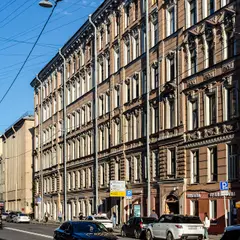

У метро · Центр
Куда сходить у метро «Чернышевская»
Для 32 мест из нашего каталога ближайшая станция — «Чернышевская» (Центр): 8 ресторанов и кафе, 6 баров, 5 мест для прогулки и 3 книжных. Например, «В тишине», «Все свободны» и «Пенка». Недорогих, примерно до 1 500 ₽ на человека, — 19. 20 готовых планов проходят через эту станцию — например, «Большой книжный и рюмочная», с маршрутом пешком между точками.
- 32 места
- 20 планов
Места у метро «Чернышевская» 31
Шпалерная ул., 26
Новое
Интерактивный музей, где гиды общаются жестами, а гости — без слов; есть формат «свидания в тишине» с мастер-классом.
Подробнее и маршрут: В тишинеПозвать сюда: В тишине
Фото здания: Vityavo, CC BY-SA 4.0 · Wikimedia Commons
ул. Некрасова, 23
Новое
Уютный независимый книжный на Некрасова с кафе и мансардой, где легко засидеться с какао и книгой; есть и полка комиксов.
Подробнее и маршрут: Все свободныПозвать сюда: Все свободны
Фото: ELindas, CC BY-SA 4.0 · Wikimedia Commons
ул. Восстания, 31
Новое
Уютная кофейня у Чернышевской с вишнёвым пирогом и вечерними кинопоказами — спокойный вариант для неспешного свидания.
Подробнее и маршрут: ПенкаПозвать сюда: Пенка
Фото здания: Bestalex, CC BY-SA 4.0 · Wikimedia Commons
Кирочная ул., 8
Новое
Лютеранская церковь с выразительными голыми стенами: органные концерты, выставки, перформансы.
Подробнее и маршрут: АнненкирхеПозвать сюда: Анненкирхе
Фото: Екатерина Борисова, CC BY-SA 4.0 · Wikimedia Commons
ул. Маяковского, 19/15
Новое
Большой книжный на Маяковского с местами для чтения, встречами с авторами и хорошим нон-фикшном — легко зависнуть на час.
Подробнее и маршрут: Во весь голосПозвать сюда: Во весь голос
Фото здания: GAlexandrova, CC BY-SA 4.0 · Wikimedia Commons
Соляной пер., 15
Новое
Музей прикладного искусства со стеклянным куполом Большого зала — одно из самых красивых пространств.
Подробнее и маршрут: Музей ШтиглицаПозвать сюда: Музей Штиглица
Фото: Lion10~commonswiki, CC BY-SA 4.0 · Wikimedia Commons
Воскресенская наб.
Новое
Сфинксы-памятник напротив «Крестов» и прямой вид на Литейный мост и Смольный — непарадная, но очень питерская прогулка.
Подробнее и маршрут: Воскресенская набережнаяПозвать сюда: Воскресенская набережная
Фото: Florstein, CC BY-SA 4.0 · Wikimedia Commons
площадь Растрелли, 1
Новое
Почти 280 ступеней наверх — и город с изгибом Невы как на ладони; туристов заметно меньше, чем на Исаакии.
Подробнее и маршрут: Звонница Смольного собораПозвать сюда: Звонница Смольного собора
Фото: Никонико962, CC BY-SA 4.0 · Wikimedia Commons

ул. Некрасова, 1/38
КруглосуточноНовое
Бар-квартирник с живыми концертами и авторскими коктейлями — ощущение, будто зашёл в гости к друзьям-музыкантам.
Подробнее и маршрут: СовременникПозвать сюда: Современник
Фото здания: Никонико962, CC BY-SA 4.0 · Wikimedia Commons
ул. Некрасова, 26
Новое
Бар-рюмочная, задавшая моду на новые рюмочные: бутерброд с килькой, чача и шумная творческая публика.
Кирочная ул., 8Б
Новое
Маленький гастробар, с которого началась новая ресторанная волна города: севиче, бычьи хвосты, терраса у кирхи.
Подробнее и маршрут: Duo GastrobarПозвать сюда: Duo Gastrobar
Кирочная ул., 24
Новое
Двор-колодец с крытыми и открытыми галереями на уровне 2-го и 4-го этажей и длинными балконами с кованым узором. Снимать вверх из центра двора днём. Двор открыт, в парадные — только с экскурсией; здесь живут люди, не шумите.
Подробнее и маршрут: Двор дома БакаПозвать сюда: Двор дома Бака
Потёмкинская ул., 4А
Новое
Любимый сад жителей центра: пруды с мостиками, холмы и лужайки, рядом «Ленинград Центр» — можно совместить с вечерним шоу.
Подробнее и маршрут: Таврический садПозвать сюда: Таврический сад
пр. Чернышевского, 3Б
Новое
Кавказская кухня от домашнего мастера: аккуратные хинкали, хачапури и мцвади с углей.
Соляной пер., 8
Новое
Квест-центр у Чернышевской: сказочные и киношные сюжеты на двух этажах и лаунж, где удобно собраться компанией.
Подробнее и маршрут: Взаперти на СоляномПозвать сюда: Взаперти на Соляном
ул. Короленко, 14
Новое
Камерный книжный-бар с поэзией и книгами о Бродском: диванчики, приглушённый свет и кофе или бокал к чтению.
Подробнее и маршрут: Конец прекрасной эпохиПозвать сюда: Конец прекрасной эпохи
ул. Короленко, 14
Новое
Квартира поэта в доме Мурузи; вход через книжный и кофейню, есть лекции и вечера чтений.
Подробнее и маршрут: Музей Бродского «Полторы комнаты»Позвать сюда: Музей Бродского «Полторы комнаты»
ул. Короленко, 14
Новое
Китайская кухня в доме Мурузи: димсамы, баоцзы, лапша и сычуаньская острота от шефа-открытия года.
Подробнее и маршрут: Пища династии МиньПозвать сюда: Пища династии Минь
ул. Некрасова, 58
Новое
Бар пивоварни AF Brew на Некрасова: свежие сорта прямо с кранов и сытные закуски вроде запечённого костного мозга.
Моховая ул., 10
Новое
Бар в отреставрированном кабинете графа Шувалова в особняке 1854 года: тонкая лепнина и сине-розовый потолок, под который придуман фиолетовый негрони.
Подробнее и маршрут: Academia Bar ShuvaloffПозвать сюда: Academia Bar Shuvaloff
ул. Чайковского, 56
Новое
Светлая минималистичная кофейня в «амстердамском» духе с завтраками весь день; тихий квартал у Таврического сада — удобно начать отсюда прогулку.
ул. Некрасова, 60
Новое
Ресторан на Некрасова с сильной овощной линией — его салат в финале премии 2026.
Моховая ул., 31
Новое
Новое кафе на Моховой с собственной выпечкой: булочка дня, десерты и честные цены рядом с Литейным.
Литейный пр., 17-19
Новое
Сезонные сеты на ферментации и кодзи — смелая авторская кухня для любителей экспериментов.
ул. Некрасова, 26
Новое
Крафтовый бар с собственным пивом и большим выбором кранов; летом снова открылся после перерыва, по выходным до трёх.
ул. Восстания, 24/27Б
Новое
Первый стендап-клуб города у площади Восстания: концерты почти каждый вечер, от обкатки шуток до больших программ.
Подробнее и маршрут: Stage StandUp ClubПозвать сюда: Stage StandUp Club
наб. Фонтанки, 2 (двор)
Новое
Двор, целиком покрытый мозаикой: стены, скамейки и клумбы выложены осколками плитки и стекла. Вход свободный, днём здесь светло и пёстро.
Подробнее и маршрут: Мозаичный дворикПозвать сюда: Мозаичный дворик
ул. Маяковского, 34/4
Новое
Камерный бар на Маяковского для неспешного вечера вдвоём: коктейли, вино и закуски, по выходным до трёх ночи.
Подробнее и маршрут: Полторы комнатыПозвать сюда: Полторы комнаты
Виленский пер., 15
Новое
Дегустационный сет с винными парами в тихом переулке у Преображенского собора; финалист премии 2026.
Подробнее и маршрут: Bourgeois BohemiansПозвать сюда: Bourgeois Bohemians
ул. Радищева, 34
Новое
Японская кухня высокого уровня: редкая рыба, крабы, разделка тунца — место для особого повода.
Подробнее и маршрут: Self Edge JapaneseПозвать сюда: Self Edge Japanese
ул. Некрасова, 6
Новое
Паб от команды The Hat в начале Некрасова: пиво, виски и барная еда, работает до двух ночи каждый день.
Подробнее и маршрут: The Red CornerПозвать сюда: The Red Corner


Готовые планы 12 из 20
- Во весь голос · Книжный магазин · м. Чернышевская
- 1 минута пешкомХроники · Рюмочная
Места для чтения и встречи с авторами в «Во весь голос», а через дорогу — бар-рюмочная с творческой публикой.
Открыть план: Большой книжный и рюмочнаяПозвать сюда: Большой книжный и рюмочная
Фото здания: GAlexandrova, CC BY-SA 4.0 · Wikimedia Commons
- Все свободны · Книжный магазин · м. Чернышевская
- 3 минуты пешкомПенка · Кофейня
Засидеться с какао на мансарде независимого книжного, а потом пара минут пешком — кофейня у Чернышевской с вишнёвым пирогом.
Открыть план: Книжная мансарда и вишнёвый пирогПозвать сюда: Книжная мансарда и вишнёвый пирог
Фото: ELindas, CC BY-SA 4.0 · Wikimedia Commons
- Все свободны · Книжный магазин · м. Чернышевская
- 4 минуты пешкомGiallo Bistro · Итальянское бистро
Полистайте книги на мансарде уютного независимого книжного, а потом 4 минуты пешком — камерное итальянское бистро, которое часто советуют для первого свидания.
Открыть план: Книжный на Некрасова и итальянское бистроПозвать сюда: Книжный на Некрасова и итальянское бистро
Фото: ELindas, CC BY-SA 4.0 · Wikimedia Commons
- Летний сад · Сад · м. Площадь Ленина
- 14 минут пешкомDuo Gastrobar · Гастробар
Мраморные статуи и аллеи старейшего сада города, а дальше 14 минут пешком по тихим улицам к маленькому гастробару, с которого началась новая ресторанная волна Петербурга.
Открыть план: Летний сад и гастробар у кирхиПозвать сюда: Летний сад и гастробар у кирхи
Фото: Anastasia Galyamicheva, CC BY-SA 4.0 · Wikimedia Commons
- В тишине · Иммерсивный музей · м. Чернышевская
- 10 минут пешкомDuo Gastrobar · Гастробар
Час без слов в интерактивном музее, где гиды общаются жестами, а потом 10 минут пешком — наговориться в гастробаре Duo.
Открыть план: Музей тишины и гастробарПозвать сюда: Музей тишины и гастробар
Фото здания: Vityavo, CC BY-SA 4.0 · Wikimedia Commons
- Анненкирхе · Арт-пространство · м. Чернышевская
- 1 минута пешкомDuo Gastrobar · Гастробар
Органный концерт в церкви с выразительными голыми стенами, а гастробар Duo — прямо у кирхи: севиче и бычьи хвосты.
Открыть план: Орган в Анненкирхе и гастробарПозвать сюда: Орган в Анненкирхе и гастробар
Фото: Екатерина Борисова, CC BY-SA 4.0 · Wikimedia Commons
- Хроники · Рюмочная · м. Чернышевская
- 8 минут пешкомHarry Not Original Pub · Паб
Бутерброд с килькой и чача в рюмочной, задавшей моду на новые рюмочные, а потом 8 минут пешком — английский паб с трансляциями матчей.
Открыть план: Рюмочная и паб с псом ГарриПозвать сюда: Рюмочная и паб с псом Гарри
Фото здания: Никонико962, CC BY-SA 4.0 · Wikimedia Commons
- В тишине · Иммерсивный музей · м. Чернышевская
- 7 минут пешкомMindal Cafe · Кавказский ресторан
Музей, где гиды говорят жестами, а гости — без слов: у них есть формат для пар. После тишины — разговор за хинкали и мцвади в Mindal Cafe, 7 минут пешком.
Открыть план: Свидание в тишинеПозвать сюда: Свидание в тишине
Фото здания: Vityavo, CC BY-SA 4.0 · Wikimedia Commons
- Музей Штиглица · Музей · м. Чернышевская
- 6 минут пешкомFrameis · Кафе-пекарня
Большой зал под стеклянным куполом — одно из самых красивых пространств города, — а потом 6 минут пешком — кафе на Моховой с собственной выпечкой.
Открыть план: Стеклянный купол Штиглица и булочка дняПозвать сюда: Стеклянный купол Штиглица и булочка дня
Фото: Lion10~commonswiki, CC BY-SA 4.0 · Wikimedia Commons
- Таврический сад · Сад · м. Чернышевская
- 18 минут пешкомПенка · Кофейня
Пруды с мостиками и холмы любимого сада жителей центра, а потом 18 минут пешком — кофейня у Чернышевской с вишнёвым пирогом и вечерними кинопоказами.
Открыть план: Таврический сад и кофе с пирогомПозвать сюда: Таврический сад и кофе с пирогом
Фото здания: Bestalex, CC BY-SA 4.0 · Wikimedia Commons
- Двор дома Бака · Двор доходного дома · м. Чернышевская
- 12 минут пешкомAcademia Bar Shuvaloff · Бар в особняке
Кованые галереи двора-колодца на Кирочной, потом фиолетовый негрони под расписным потолком особняка на Моховой.
Открыть план: Галереи дома Бака и бар графа ШуваловаПозвать сюда: Галереи дома Бака и бар графа Шувалова
- Am Saint · Кофейня · м. Чернышевская
- 8 минут пешкомДвор дома Бака · Двор доходного дома
Неспешный завтрак в светлой кофейне на Чайковского и кадры с галереями дома Бака в пяти минутах.
Открыть план: Завтрак у Таврического и двор БакаПозвать сюда: Завтрак у Таврического и двор Бака


Компьютерные клубы 1
Фурштатская ул., 25
КруглосуточноНовое
Круглосуточный клуб у Чернышевской, в паре кварталов от Таврического сада — легко совместить игру с прогулкой.
Подробнее и маршрут: Divinity SpaceПозвать сюда: Divinity Space
Фото здания: Анастасия Юрьевна Львова, CC BY-SA 4.0 · Wikimedia Commons

Как позвать
- Выбери план, место или событие — в карточке адрес, цены и маршрут в Яндекс Картах.
- Нажми «Позвать сюда» — соберётся приглашение-игра для свидания или голосование для компании.
- Отправь ссылку в любой мессенджер: тебе ответят, а компания отметит, куда и когда может. Бесплатно и без регистрации.